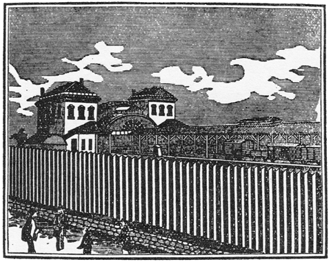
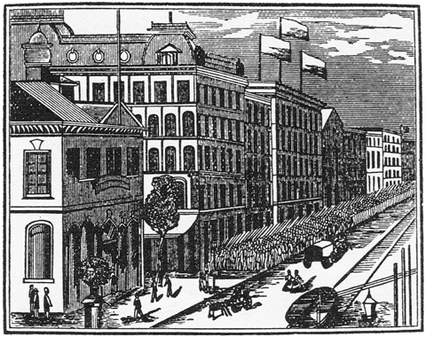
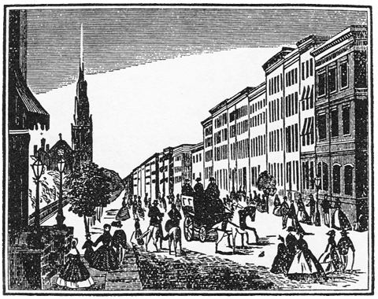

［＃ページの左右中央］
宇宙は意志の現れであり、意志の本質は惱みである
シヨウペンハウエル
［＃改ページ］
「青猫」の初版が出たのは、一九二三年の春であり、今から約十年ほど昔になる。その後ずつと絶版になつて、市上に長く本を絶えて居た。元來、詩集といふものは、初版限りで絶本にするところに價値があるので、版を重ねて増册しては、詩集の人に貴重される稀本の價値が無くなつて來る。しかも今日、あへてこの再版を定本にして出す所以は、著者の私にとつて種種の理由があるのである。
第一の理由は、初版「青猫」の内容と編輯とが、私にとつて甚だ不滿足であり、意にみたないところが多かつた爲である。この詩集の校正が終り、本が市上に出始めた頃、私はさらにまた多くの詩を作つて居た。それらの詩篇は、すべて「青猫」に現れた同じ詩境の續篇であり、詩のテーマに於てもスタイルに於ても、當然「青猫」の中に編入すべき種類のものであつた。否むしろそれが無ければ、詩集としてのしめ括りがなく、大尾の完成が缺けるやうなものであつた。しかも詩集は既に製本されて出てしまつたので、止むを得ず私は、さらに此等の詩を集めて一册にし、青猫續篇詩集（第二青猫）として刊行しようと考へた。然るにその出版の好機がなく、且つ詩の數が少し豫定に足りないので、そのまま等閑に附してしまつた。但し此等の詩篇は、當時雜誌「日本詩人」その他に發表し、後に第一書房版の綜合詩集にも編入したので、私の讀者にとつては既に公表されてる者なのである。しかも「青猫」を完全な定本詩集とする爲には、是非とも此等の詩を補遺しなければならないので、初版出版後今日まで、長く私はその再版の機會を待つて居た。
同時にまた私は、その再版の機會をまつて、初版本の編輯上に於ける不統一を正さうとした。全集や綜合詩集は例外として、すべて單一な標題を掲げた詩集は、その標題が示す一つの詩境を、力強く一點に向つて集中させ、そこに詩集の統一された印象を構成させねばならないこと、あだかも一卷の小説に於ける構成と同じである。一册の標題された詩集の中に、そのテーマやスタイルを異にしてゐる種種雜多の詩が書かれてるのは、藝術品としての統一がなく、内容上の美的裝幀を失格してゐる。そして「青猫」の初版本が、この點でまた不備であつた。例へば「軍隊」「僕等の親分」などのやうに詩の主想とスタイルとを異にして居る別種の者が混入して居り、他との調和美を破つて居た。再版の機會に於て、これもまた改訂編輯せねばならなかつた。
次の第二の理由は、初版本の裝幀、特に
 繪のことに關係して居る。私の始めのプランとしては、本書に用ゐた物と同じやうな木版畫を、初版本にも繪とするつもりであつた。然るに出版書店の方で時日を迫り、版畫職工との煩瑣な交渉を嫌つた爲、止むを得ず有り合せの繪端書を銅版にして代用した。元來私の書物に於ては、繪が單なる裝飾でなく、内容の一部となつて居るのであるから、繪が著者の意に充たないのは、内容の詩集が意に充たないのと同じである。この點もまた機會を見て、再版に改訂せねばならなかつた。
繪のことに關係して居る。私の始めのプランとしては、本書に用ゐた物と同じやうな木版畫を、初版本にも繪とするつもりであつた。然るに出版書店の方で時日を迫り、版畫職工との煩瑣な交渉を嫌つた爲、止むを得ず有り合せの繪端書を銅版にして代用した。元來私の書物に於ては、繪が單なる裝飾でなく、内容の一部となつて居るのであるから、繪が著者の意に充たないのは、内容の詩集が意に充たないのと同じである。この點もまた機會を見て、再版に改訂せねばならなかつた。最後に第三の理由としては、この詩集「青猫」が、私の過去に出した詩集の中で、特になつかしく自信と愛着とを持つことである。世評の好惡はともかくあれ、著者の私としては、むしろ「月に吠える」よりも「青猫」の方を愛してゐる。なぜならこの詩集には、私の魂の最も奧深い
「青猫」ほどにも、私にとつて懷しく悲しい詩集はない。これらの詩篇に於けるイメーヂとヴイジヨンとは、涙の網膜に映じた幻燈の繪で、雨の日の硝子窓にかかる曇りのやうに、拭けども拭けども後から後から現れて來る悲しみの表象だつた。「青猫」はイマヂスムの詩集でなく、近刊の詩集「氷島」と共に、私にとつての純一な感傷を歌つた詩集であつた。ただ「氷島」の悲哀が、意志の反噬する牙を持つに反して、この「青猫」の悲哀には牙がなく、全く疲勞の椅子に身を投げ出したデカダンスの悲哀（意志を否定した虚無の悲哀）であることに、二つの詩集の特殊な相違があるだけである。日夏氏のみでなく、當時の詩壇の定評は、この點で著者のポエヂイを甚だしく誤解してゐた。そしてこの一つのことが、私を未だに寂しく悲しませてゐる。今この再版を世に出すのも、既に十餘年も經た今の詩壇で、正しい認識と理解をもつ別の讀者を、新しく求めたいと思ふからである。
本書の標題「青猫」の意味について、しばしば人から質問を受けるので、ついでに此所で解説しておかう。著者の表象した語意によれば、「青猫」の「青」は英語の Blue を意味してゐるのである。即ち「希望なき」「憂鬱なる」「疲勞せる」等の語意を含む言葉として使用した。この意を明らかにする爲に、この定本版の表紙には、特に英字で The Blue Cat と印刷しておいた。つまり「物憂げなる猫」と言ふ意味である。も一つ他の別の意味は、集中の詩「青猫」にも現れてる如く、都會の空に映る電線の青白いスパークを、大きな青猫のイメーヂに見てゐるので、當時田舍にゐて詩を書いてた私が、都會への切ない郷愁を表象してゐる。尚この詩集を書いた當時、私はシヨーペンハウエルに惑溺してゐたので、あの意志否定の哲學に本質してゐる、厭世的な無爲のアンニユイ、小乘佛教的な寂滅爲樂の厭世感が、
初版「青猫」は多くの世評に登つたけれども、著者としての私が滿足し、よく詩集のエスプリを言ひ當てたと思つた批評は、當時讀んだ限りに於て、藏原伸二郎君の文だけだつた。よつてこの定本では、同君に舊稿を乞うて卷尾に附した。讀者の鑑賞に便すれば幸甚である。
繪について 本書の繪は、すべて明治十七年に出版した世界名所圖繪から採録した。畫家が藝術意識で描いたものではなく、無智の職工が寫眞を見て、機械的に木口木版（西洋木版）に刻つたものだが、不思議に一種の新鮮な詩的情趣が縹渺してゐる。つまり當時の人人の、西洋文明に對する驚き――汽車や、ホテルや、蒸汽船や街路樹のある文明市街やに對する、子供のやうな悦びと不思議の驚き――が、エキゾチツクな詩情を刺激したことから、無意識で描いた職工版畫の中にさへも、その時代精神の浪漫感が表象されたものであらう。その點に於て此等の版畫は、あの子供の驚きと遠い背景とをもつたキリコの繪と、偶然にも精神を共通してゐる。しかしながらずつと古風で、色の褪せたロマンチツクの風景である。見給へ。すべての版畫を通じて、空は青く透明に晴れわたり、閑雅な白い雲が浮んでゐる。それはパノラマ館の屋根に見る青空であり、オルゴールの音色のやうに、靜かに寂しく、無限の郷愁を誘つてゐる。さうして鋪道のある街街には、靜かに音もなく、夢のやうな建物が眠つてゐて、秋の巷の落葉のやうに、閑雅な雜集が徘徊してゐる。人も、馬車も、旗も、汽船も、すべてこの風景の中では「時」を持たない。それは指針の止つた大時計のやうに、無限に悠悠と靜止してゐる。そしてすべての風景は、カメラの磨硝子に寫つた景色のやうに、時空の第四次元で幻燈しながら、
西暦一九三四年秋
著者
［＃改丁］［＃ページの左右中央］
定本 青猫 全
［＃改ページ］
座敷のなかで 大きなあつぼつたい翼 をひろげる
蝶のちひさな 黒い顏とその長い觸手と
紙のやうにひろがる あつぼつたいつばさの重みと
わたしは白い寢床のなかで目をさましてゐる。
しづかにわたしは夢の記憶をたどらうとする
夢はあはれにさびしい秋の夕べの物語
水のほとりにしづみゆく落日と
しぜんに腐りゆく古き空家にかんする悲しい物語。
夢をみながら わたしは幼な兒のやうに泣いてゐた
たよりのない幼な兒の魂が
空家の庭に生える草むらの中で しめつぽいひきがへるのやうに泣いてゐた。
もつともせつない幼な兒の感情が
とほい水邊のうすら明りを戀するやうに思はれた。
ながいながい時間のあひだ わたしは夢をみて泣いてゐたやうだ。
あたらしい座敷のなかで 蝶が翼 をひろげてゐる
白い あつぼつたい 紙のやうな翼 をふるはしてゐる
わたしの憂鬱は羽ばたきながら
ひらひらと部屋中を飛んでゐるのです。
ああなんといふ幻覺だらう
とりとめもない怠惰な日和が さびしい涙をながしてゐる。
もう追憶の船は港をさり
やさしい戀人の捲毛もさらさらに乾いてしまつた
草場に昆蟲のひげはふるへて
季節は亡靈のやうにほの白くすぎてゆくのです。
ああ私はなにも見ない。
せめては片戀の娘たちよ
おぼろにかすむ墓場の空から 夕風のやさしい歌をうたつておくれ。
みどりの石竹の花のかげに ひとつの幻の屍體は眠る
その黒髮は床にながれて
手足は力なく投げだされ 寢臺の上にあふむいてゐる
この密室の幕のかげを
ひそかに音もなくしのんでくる ひとつの青ざめたふしぎの情慾
そはむしかへす麝香になやみ
くるしく はづかしく なまめかしき思ひのかぎりをしる。
ああいま春の夜の灯かげにちかく
うれしくも屍蝋のからだを嗅ぎて弄ぶ。
やさしいくちびるに油をぬりつけ すべすべとした白い肢體をもてあそぶ。
そはひとつのさびしい青猫
君よ 夢魔におびえて このかなしい戲れをとがめたまふな。
ある夜ふけの遠い空に
洋燈のあかり白白ともれてくるやうにしる。
かなしくなりて家家の乾場をめぐり
あるいは海にうろつき行き
くらい夜浪の呼びあげる響をきいてる。
しとしととふる雨にぬれて
さびしい心臟は口をひらいた
ああかの海鳥はどこへ行つたか。
運命の暗い月夜を翔けさり
夜浪によごれた腐肉をついばみ泣きゐたりしが
ああ遠く 飛翔し去つてかへらず。
陸橋を渡つて行かう
黒くうづまく下水のやうに
もつれる軌道の高架をふんで
はるかな落日の部落へ出よう。
かしこを高く
天路を翔けさる鳥のやうに
ひとつの架橋を越えて跳躍しよう。
花やかな月が空にのぼつた
げに大地のあかるいことは。
小さな白い羊たちよ
家の屋根の下にお這入り
しづかに涙ぐましく 動物の足調子をふんで。
［＃改ページ］
［＃ページの左右中央］

停車場之圖
無限に遠くまで續いてゐる、この長い長い柵の寂しさ。人氣のない構内では、貨車が靜かに眠つて居るし、屋根を越えて空の向うに、遠いパノラマの郷愁がひろがつて居る。これこそ詩人の出發する、最初の悲しい停車場である。
［＃改ページ］
海牛のやうな農夫よ
田舍の屋根には草が生え、夕餉 の煙ほの白く空にただよふ。
耕作を忘れたか肥つた農夫よ
田舍に飢饉は迫り 冬の農家の壁は凍つてしまつた。
さうして洋燈 のうす暗い廚子 のかげで
先祖の死靈がさむしげにふるへてゐる。
このあはれな野獸のやうに
ふしぎな宿命の恐怖に憑 かれたものども
その胃袋は野菜でみたされ くもつた神經に暈 がかかる。
冬の寒ざらしの貧しい田舍で
愚鈍な 海牛のやうな農夫よ。
野鼠は畠にかくれ
矢車草は散り散りになつてしまつた。
歌も 酒も 戀も 月も もはやこの季節のものでない
わたしは老いさらぼつた鴉のやうに
よぼよぼとして遠國の旅に出かけて行かう。
さうして乞食どものうろうろする
どこかの遠い港の波止場で
海草の焚けてる空のけむりでも眺めてゐよう。
ああ まぼろしの處女 もなく
しをれた花束のやうな運命になつてしまつた
砂地にまみれ
そのじつにかはゆらしい むつくりとした工合はどうだ
そのまるまるとして菓子のやうにふくらんだ工合はどうだ
指なんかはまことにほつそりとしてしながよく
まるでちひさな青い魚類のやうで
やさしくそよそよとうごいてゐる樣子はたまらない。
ああ その手の上に接吻 がしたい。
そつくりと口にあてて喰べてしまひたい
なんといふすつきりとした指先のまるみだらう
指と指との間に咲く このふしぎなる花の風情はどうだ
その匂ひは麝香のやうで 薄く汗ばんだ桃の花のやうにみえる。
かくばかりも麗はしくみがきあげた女性の指
すつぽりとしたまつ白のほそながい指
ぴあのの鍵盤をたたく指
針をもて絹をぬふ仕事の指
愛をもとめる肩によりそひながら
わけても感じやすい皮膚のうへに
かるく爪先をふれ
かるく爪でひつかき
かるくしつかりと、押へつけるやうにする指のはたらき
そのぶるぶると身ぶるひをする愛のよろこび はげしく狡猾にくすぐる指
おすましで意地惡のひとさし指
卑怯で快活な小ゆびのいたづら
親指の肥え太つたうつくしさと その暴虐なる野蠻性
ああ そのすべすべと磨きあげたいつぽんの指をおしいただき
すつぽりと口にふくんでしやぶつてゐたい。いつまでたつてもしやぶつてゐたい。
その手の甲はわつぷるのふくらみで
その手の指は氷砂糖のつめたい食慾
ああ この食慾
子供のやうに意地のきたない無恥の食慾。
私はいつも都會をもとめる
都會のにぎやかな群集の中に居るのをもとめる
群集はおほきな感情をもつた浪のやうなものだ。
どこへでも流れてゆくひとつのさかんな意志と愛欲とのぐるうぷだ。
ああ 春の日のたそがれどき
都會の入り混みたる建築と建築との日影をもとめ
おほきな群集の中にもまれてゆくのは樂しいことだ。
みよ この群集のながれてゆくありさまを
浪は浪の上にかさなり
浪はかずかぎりなき日影をつくり、日影はゆるぎつつひろがりすすむ。
人のひとりひとりにもつ憂ひと悲しみと、みなそこの日影に消えてあとかたもない。
ああ このおほいなる愛と無心のたのしき日影
たのしき浪のあなたにつれられて行く心もちは涙ぐましい。
いま春の日のたそがれどき
群集の列は建築と建築との軒をおよいで
どこへどうしてながれて行かうとするのだらう。
私のかなしい憂鬱をつつんでゐる ひとつのおほきな地上の日影。
ただよふ無心の浪のながれ
ああ どこまでも どこまでも この群集の浪の中をもまれて行きたい
もまれて行きたい。
［＃改ページ］［＃ページの左右中央］

ホテル之圖
ホテルの屋根の上に旗が立つてる。何といふ寂しげな、物思ひに沈んだ旗だらう。鋪道に歩いてる人も馬車も、靜かな郷愁に耽りながら、無限の「時」の中を徘徊してゐる。そして家家の窓からは、閑雅なオルゴールの音が聞えてくる。この街の道の盡きるところに、港の海岸通があるのだらう。すべての出發した詩人たちは、重たい旅行鞄を手にさげながら、今も尚このホテルの五階に旅泊して居る。
［＃改ページ］
この美しい都會を愛するのはよいことだ
この美しい都會の建築を愛するのはよいことだ
すべてのやさしい娘等をもとめるために
すべての高貴な生活をもとめるために
この都にきて賑やかな街路を通るはよいことだ
街路にそうて立つ櫻の竝木
そこにも無數の雀がさへづつてゐるではないか。
ああ このおほきな都會の夜にねむれるものは
ただ一匹の青い猫のかげだ
かなしい人類の歴史を語る猫のかげだ
われらの求めてやまざる幸福の青い影だ。
いかならん影をもとめて
みぞれふる日にもわれは東京を戀しと思ひしに
そこの裏町の壁にさむくもたれてゐる
このひとのごとき乞食はなにの夢を夢みて居るのか。
重たいおほきな翅をばたばたして
ああ なんといふ弱弱しい心臟の所有者だ。
花瓦斯のやうな明るい月夜に
白くながれてゆく生物の群をみよ
そのしづかな方角をみよ。
この生物のもつひとつのせつなる情緒をみよ。
あかるい花瓦斯のやうな月夜に
ああ なんといふ悲しげな いぢらしい蝶類の騷擾だ。
ふらんすからくる煙草のやにのにほひのやうだ
そのにほひをかいでゐると氣がうつとりとする。
うるはしい かなしい さまざまの入りこみたる空の感情
つめたい銀いろの小鳥のなきごゑ
春がくるときのよろこびは
あらゆるひとの命をふきならす笛のひびきのやうだ。
ふるへる めづらしい野路のくさばな
おもたく雨にぬれた空氣の中にひろがるひとつの音色
なやましき女のなきごゑはそこにもきこえて
春はしつとりとふくらんでくるやうだ。
春としなれば山奧のふかい森の中でも
くされた木株の中でもうごめくみみずのやうに
私のたましひはぞくぞくとして菌 を吹き出す
たとへば毒だけ へびだけ べにひめぢのやうなもの
かかる菌 の類はあやしげなる色香をはなちて
ひねもすさびしげに匂つてゐる。
春がくる 春がくる
春がくるときのよろこびは あらゆるひとの命を吹きならす笛のひびきのやうだ
そこにもここにも
ぞくぞくとしてふきだす菌 毒だけ
また藪かげに生えてほのかに光るべにひめぢの類。
春はどこまできたか
春はそこまできて櫻の匂ひをかぐはせた
子供たちのさけびは野に山に
はるやま見れば白い浮雲がながれてゐる。
さうして私の心はなみだをおぼえる
いつもおとなしくひとりで遊んでゐる私のこころだ。
この心はさびしい
この心はわかき少年の昔より私のいのちに日影をおとした
しだいにおほきくなる孤獨の日かげ
おそろしい憂鬱の日かげはひろがる。
いま室内にひとりで坐つて
暮れてゆくたましひの日かげをみつめる
そのためいきはさびしくして
とどまる蠅のやうに力がない。
しづかに暮れてゆく春の日の夕日の中を
私のいのちは力なくさまよひあるき
私のいのちは窓の硝子にとどまりて
たよりなき子供等のすすりなく唱歌をきいた。
こんもりとした森の木立のなかで
いちめんに白い蝶類が飛んでゐる。
むらがる むらがりて飛びめぐる
てふ てふ てふ てふ てふ てふ てふ
みどりの葉のあつぼつたい隙間から
ぴか ぴか ぴか ぴかと光る そのちひさな鋭どい翼
いつぱいにひろがつてとびめぐる てふ てふ てふ てふ てふ てふ てふ てふ てふ てふ てふ てふ
ああ これはなんといふ憂鬱な幻だ
このおもたい手足 おもたい心臟
かぎりなくなやましい物質と物質との重なり
ああ これはなんといふ美しい病氣だらう。
つかれはてたる神經のなまめかしいたそがれどきに
私はみる ここに女たちの投げ出したおもたい手足を
つかれはてた股や乳房のなやましい重たさを
その鮮血のやうなくちびるはここにかしこに
私の青ざめた屍體のくちびるに
額に 髮に 髮の毛に 腋に 股に 腋の下に 手くびに 足に 足のうらに みぎの腕にも ひだりの腕にも 腹のうへにも 臍のうへにも
むらがりむらがる 物質と物質との淫らなかたまり
ここにかしこに追ひみだれたる蝶のまつくろい集團。
ああこの恐ろしい地上の陰影
このなやましいまぼろしの森の中に
しだいにひろがつてゆく憂鬱の日かげをみつめる。
その私の心はばたばたと羽ばたきして
小鳥の死ぬるときの 醜いすがたのやうだ。
ああこのたへがたく惱ましい性の感覺
あまりに恐ろしく憂鬱なる。
憂鬱なる櫻が遠くからにほひはじめた。
櫻の枝はいちめんにひろがつてゐる
日光はきらきらとしてはなはだまぶしい。
私は密閉した家の内部に住み
日毎に野菜をたべ 魚やあひるの卵をたべる
その卵や肉はくさりはじめた
遠く櫻のはなは酢え
櫻のはなの酢えた匂ひはうつたうしい。
いまひとびとは帽子をかぶつて、外光の下を歩きにでる
さうして日光が遠くにかがやいてゐる
けれども私はこの室内にひとりで坐つて
思ひをはるかなる櫻のはなの下によせ
野山にたはむれる青春の男女によせる
ああ なんといふよろこびが輝やいてゐることか
いちめんに枝をひろげた櫻の花の下で
わかい娘たちは踊ををどる
娘たちの白くみがいた踊の手足
しなやかにおよげる衣裳
ああ そこにもここにも どんなにうつくしい曲線がもつれあつてゐることか
花見のうたごゑは横笛のやうに長閑 で
かぎりなき憂鬱のひびきをもつてきこえる。
いま私の心は涙でぬぐはれ
閉ぢこめたる窓のほとりに力なくすすり泣く
ああこのひとつのまづしき心は なにものの生命 をもとめ
なにものの影をみつめて泣いてゐるのか
ただいちめんに酢えくされたる美しい世界のはてで
遠く花見の憂鬱なる横笛のひびきをきく。
いくつかの季節はすぎ
もう憂鬱の櫻も白つぽく腐れてしまつた。
馬車はごろごろと遠くをはしり
海も 田舍も ひつそりとした空氣の中に眠つてゐる。
なんといふ怠惰な日だらう
運命はあとからあとからとかげつてゆき
さびしい病鬱は柳の葉かげにけむつてゐる。
もう暦もない 記憶もない
わたしは燕のやうに巣立ちをし さうしてふしぎな風景のはてを翔つてゆかう。
むかしの人よ 愛する猫よ
わたしはひとつの歌を知つてる
さうして遠い海草の焚けてる空から 爛れるやうな接吻 を投げよう。
ああ このかなしい情熱の外 どんな言葉も知りはしない。
松林の中を歩いて
あかるい氣分の
遠く市街を離れたところで
だれも訪づれてくるひとさへなく
林間の かくされた 追憶の 夢の中の
をとめは戀戀の羞をふくんで
あけぼののやうに爽快な 別製の皿を運んでくる仕組
私はゆつたりとふほふくを取つて
おむれつ ふらいの類を喰べた。
空には白い雲が浮んで
たいそう閑雅な食慾である。
馬車の中で
私はすやすやと眠つてしまつた。
きれいな婦人よ
私をゆり起してくださるな
明るい街燈の
すずしい緑蔭の田舍をすぎ
いつしか海の匂ひも行手にちかくそよいでゐる。
ああ
私はうつつにうつつを追ふ。
きれいな婦人よ
旅館の花ざかりなる軒にくるまで
私をゆり起してくださるな。
この密林の奧ふかくに
おほきな
ふしぎな象の耳のやうだ。
薄闇の濕地にかげをひいて
ぞくぞくと這へる羊齒植物 爬蟲類
蛇 とかげ ゐもり 蛙 さんしようをの類。
なにをあだむが追憶したか
原始の情緒は雲のやうで
むげんにいとしい愛のやうで
はるかな記憶の彼岸にうかんで
とらへどころもありはしない。
書生は陰氣な寢臺から
家畜のやうに這ひあがつた。
書生は羽織をひつかけ
かれの見る自然へ出かけ突進した。
自然は明るく小綺麗でせいせいとして
そのうへにも匂ひがあつた。
森にも 辻にも 賣店にも
どこにも青空がひるがへりて 美麗であつた。
そんな輕快な天氣の日に
美麗な
 つた。
つた。わたくし思ふに
思想はなほ天候のやうなものであるか。
書生は書物を日向にして
ながく幸福のにほひを嗅いだ。
俥に乘つて走つて行くとき
野も 山も ばうばうとして霞んでみえる。
柳は風にふきながされ
燕も 歌も ひよ鳥も かすみの中に消えさる。
ああ 俥のはしる
ふしぎな ばうばくたる景色を行手にみる。
その風光は遠くひらいて
さびしく憂鬱な笛の音を吹き鳴らす
ひとのしのびて耐へがたい情緒である。
このへんてこなる方角をさして行け
春の朧げなる柳のかげで 歌も燕もふきながされ
わたしの俥やさんはいつしんですよ。
冬の曇天の 凍りついた天氣の下で
そんなに憂鬱な自然の中で
だまつて道ばたの草を食つてる
みじめな しよんぼりした 宿命の 因果の蒼ざめた馬の影です。
わたしは影の方へうごいて行き
馬の影はわたしを眺めてゐるやうす。
ああはやく動いてそこを去れ
わたしの生涯 の映畫幕 から
すぐに すぐに 外 りさつてこんな幻像を消してしまへ。
私の「意志」を信じたいのだ。馬よ！
因果の 宿命の 定法の みじめなる
絶望の凍りついた風景の乾板から
蒼ざめた影を逃走しろ。
鬱蒼としげつた森林の樹木のかげで
ひとつの思想を歩ませながら
佛は蒼明の自然を感じた。
どんな瞑想をもいきいきとさせ
どんな涅槃にも溶け入るやうな
そんな美しい月夜をみた。
「思想は一つの意匠であるか？」
佛は月影を踏み行きながら
かれのやさしい心にたづねた。
ねぼけた櫻の咲くころ
白いぼんやりした顏がうかんで
窓で見てゐる。
ふるいふるい記憶のかげで
どこかの波止場で逢つたやうだが
菫の病鬱の匂ひがする
外光のきらきらする硝子窓から
ああ遠く消えてしまつた 虹のやうに。
私はひとつの憂ひを知る
ふたたび永遠にかへつて來ない。
わたしは田舍の
まづしい農家の庭に羽ばたきし
垣根をこえて
わたしは
ああ この冬の日の陽ざしのかげに
さびしく乾地の草をついばむ
わたしは白つぽい病氣の
あはれな かなしい 羽ばたきをする
私はかなしい田舍の
家根をこえ
垣根をこえ
墓場をこえて
はるかの野末にふるへさけぶ
ああ私はこはれた日時計 田舍の白つぽい
軟風のふく日
暗鬱な
しづかな木立の奧で落葉する路を歩いてゐた。
天氣はさつぱりと晴れて
赤松の梢にたかく囀鳥の騷ぐをみた
愉快な小鳥は胸をはつて
ふたたび情緒の調子をかへた。
ああ 過去の私の鬱陶しい瞑想から 環境から
どうしてけふの情感をひるがへさう
かつてなにものすら失つてゐない。
人生においてすら
人生においてすら 私の失つたのは快適だけだ
ああしかし あまりにひさしく失つてゐる。
薄暮の疲勞した季節がきた。
どこでも室房はうす暗く
慣習のながい疲れをかんずるやうだ。
雨は往來にびしよびしよして
貧乏な長屋が竝びてゐる。
こんな季節のながいあひだ
ぼくの生活は落魄して
ひどく窮乏になつてしまつた。
家具は一隅に投げ倒され
冬の 埃の 薄命の日ざしのなかで
蠅はぶむぶむと窓に飛んでる。
こんな季節のつづく間
ぼくのさびしい訪問者は
老年の よぼよぼした いつも白粉くさい貴婦人です
ああ彼女こそ僕の昔の戀人
古ぼけた記憶の かあてんの影をさまよひあるく情慾の影の影だ。
こんな白雨のふつてる間
どこにも新しい信仰はありはしない。
詩人はありきたりの思想をうたひ
民衆のふるい傳統は疊の上になやんでゐる。
ああこの厭やな天氣
日ざしの鈍い季節。
ぼくの感情を燃え爛すやうな構想は
ああもう どこにだつてありはしない。
老子の幻想から
聖人よ あなたの道を教へてくれ
繁華な村落はまだ遠く
聖人よ あなたの眞理をきかせてくれ。
杏の花のどんよりとした季節のころに
ああ私は家を出で なにの學問を學んできたか
むなしく青春はうしなはれて
戀も 名譽も 空想も みんな泥柳の牆 に涸れてしまつた。
聖人よ
日は田舍の野路にまだ高く
村村の娘が唱ふ機歌 の聲も遠くきこえる。
聖人よ どうして道を語らないか？
あなたは默し さうして桃や李やの咲いてる夢幻の郷 で
ことばの解き得ぬ認識の玄義を追ふか。
ああ この道徳の人を知らない
晝頃になつて村に行き
あなたは農家の庖廚に坐るでせう。
さびしい路上の聖人よ
わたしは別れ もはや遠くあなたの沓音 を聽かないだらう
悲しみのしのびがたい時でさへも
ああ 師よ！ 私はまだ死なないでせう。
［＃改ページ］［＃ページの左右中央］

海港之圖
港へ來た。マストのある風景と、浪を蹴つて走る蒸汽船と。
どこへもう！ 外の行くところもありはしない。
はやく石垣のある波止場を曲り
遠く沖にある帆船へ歸つて行かう。
さうして忘却の錨をとき、記憶のだんだんと消えさる港を訪ねて行かう。
――まどろすの歌――
［＃改ページ］
夏草のしげる叢 から
ふはりふはりと天上さして昇りゆく風船よ
籠には舊暦の暦をのせ
はるか地球の子午線を越えて吹かれ行かうよ。
ばうばうとした虚無の中を
雲はさびしげにながれて行き
草地も見えず 記憶の時計もぜんまいがとまつてしまつた。
どこをめあてに翔けるのだらう！
さうして酒瓶の底は空しくなり
醉ひどれの見る美麗な幻覺 も消えてしまつた。
しだいに下界の陸地をはなれ
愁ひや雲やに吹きながされて
知覺もおよばぬ眞空圈内へまぎれ行かうよ。
この瓦斯體もてふくらんだ氣球のやうに
ふしぎにさびしい宇宙のはてを
友だちもなく ふはりふはりと昇つて行かうよ。
かなしく ぼんやりとした光線のさすところで
それが遠い山脈の方まで續いてゐるではないか。
なんたるさびしげな青空だらう。
透き通つた硝子張りの虚空の下で
あまたのふしぎなる建築が格鬪し
建築の腕と腕とが組み合つてゐる。
このしづかなる博覽會の景色の中を
かしこに遠く 正門を過ぎて人人の影は空にちらばふ
なんたる夢のやうな群集だらう。
そこでは文明のふしぎなる幻燈機械や
天體旅行の奇妙なる見世物をのぞき歩く
さうして西暦千八百十年頃の 佛國巴里市を見せるパノラマ館の裏口から
人の知らない祕密の拔穴「時」の胎内へもぐり込んだ
ああ この逃亡をだれが知るか？
無限にはるかなる地平の空で
日ざしは悲しげにただよつてゐる。
愚かな海鳥のやうな姿 をして
瓦や敷石のごろごろとする 港の市街區を通つて行かう。
こはれた幌馬車が列をつくつて
むやみやたらに圓錐形の混雜がやつてくるではないか
家臺は家臺の上に積み重なつて
なんといふ人畜のきたなく混雜する往來だらう。
見れば大時計の古ぼけた指盤の向うで
冬のさびしい海景が泣いて居るではないか。
涙を路ばたの石にながしながら
私の辮髮を背中にたれて 支那人みたやうに歩いてゐよう。
かうした暗い光線はどこからくるのか
あるいは理髮師 や裁縫師 の軒に artist の招牌 をかけ
野菜料理や木造旅館の貧しい出窓が傾いて居る。
どうしてこんな貧しい「時」の寫眞を映すのだらう。
どこへもう！ 外の行くところさへありはしない。
はやく石垣のある波止場を曲り
遠く沖にある帆船へかへつて行かう。
さうして忘却の錨を解き 記録のだんだんと消えさる港を訪ねて行かう。
散歩者のうろうろと歩いてゐる
十八世紀頃の物さびしい裏街の通りがあるではないか
青や赤や黄色の旗がびらびらして
むかしの出窓に鐵葉 の帽子が飾つてある。
どうしてこんな情感のふかい市街があるのだらう！
日時計の時刻はとまり
どこに買物をする店や市場もありはしない。
古い砲彈の碎片 などが掘り出されて
それが要塞區域の砂の中で まつくろに錆びついてゐたではないか。
どうすれば好いのか知らない
かうして人間どもの生活する 荒寥の地方ばかりを歩いてゐよう。
年をとつた婦人のすがたは
網膜の映るところに眞紅 の布 がひらひらする。
なんたるかなしげな黄昏だらう！
象のやうなものが群がつてゐて
郵便局の前をあちこちと彷徨してゐる。
「ああどこに 私の音づれの手紙を書かう！」
或は 世界の謎
さびしい洞窟の中に眠つてゐるひとよ
君は貝でもない 骨でもない 物でもない。
さうして磯草の枯れた砂地に
ふるく錆びついた時計のやうでもないではないか。
ああ 君は「眞理」の影か 幽靈か
いくとせもいくとせもそこに坐つてゐる
ふしぎの魚のやうに生きてゐる
このたへがたくさびしい荒野の涯で
海はかうかうと空に鳴り
君の耳はそれを聽くか？
どこにまあ！ この情慾は口を開いたら好いのだらう。
大海龜 は山のやうに眠つてゐるし
古生代の海に近く
厚さ千貫目ほどもある 

なんといふ鈍暗な日ざしだらう！
しぶきにけむれる岬岬の島かげから
ふしぎな病院船のかたちが現はれ
それが沈沒した錨の纜 をずるずると曳いてゐるではないか。
ねえ！ お孃さん
いつまで僕等は此處に坐り 此處の悲しい岩に竝んでゐるのでせう。
太陽は無限に遠く
光線のさしてくるところに ぼうぼうといふほら貝が鳴る。
お孃さん！
かうして寂しくぺんぎん鳥のやうにならんでゐると
愛も 肝臟も つららになつてしまふやうだ。
やさしいお孃さん！
もう僕には希望 もなく 平和な生活 の慰めもないのだよ。
あらゆることが僕を氣ちがひじみた憂鬱にかりたてる
へんに季節は轉轉して
もう春も李 もめちやくちやな妄想の網にこんがらかつた。
どうすれば好いのだらう お孃さん！
ぼくらはおそろしい孤獨の海邊で 大きな貝肉のやうにふるへてゐる。
そのうへ情慾の言ひやうもありはしないし
こんなにも切ない心がわからないの？ お孃さん！
輪の暦をかぞへてみれば
の暦をかぞへてみればわたしの過去は魚でもない 猫でもない 花でもない
さうして草木の祭祀に捧げる 器物 や瓦の類でもない
金でもなく 蟲でもなく 隕石でもなく 鹿でもない
ああ ただひろびろとしてゐる無限の「時」の哀傷よ。
わたしのはてない生涯 を追うて
どこにこの因果の車をして行かう！
して行かう！とりとめもない意志の惱みが あとからあとからとやつてくるではないか。
なんたるあいせつの笛の音 だらう
鬼のやうなものがゐて木の間で吹いてる。
まるでしかたのない夕暮れになつてしまつた
青草むらの中にべらべらと燃える提灯がある。
風もなく
星宿のめぐりもしづかに美しい夜 ではないか。
ひつそりと魂の祕密をみれば
わたしの轉生はみじめな乞食で
星でもなく 犀でもなく 毛衣 をきた聖人の類でもありはしない。
宇宙はくるくるとまはつてゐて
永世輪のわびしい時刻がうかんでゐる。
のわびしい時刻がうかんでゐる。さうしてべにがらいろにぬられた恐怖の谷では
あるいはその根にいろいろな祭壇が乾 からびてる。
どういふ人間どもの妄想だらう！
薄暮のさびしい部屋の中で
わたしのあうむ時計はこはれてしまつた。
感情のねぢは錆びて ぜんまいもぐだらくに解けてしまつた。
こんな古ぼけた暦をみて
どうして宿命のめぐりあふ暦數をかぞへよう。
いつといふこともない
ぼろぼろになつた憂鬱の鞄をさげて
さうして海岸のけむつた柳のかげで
あるいは波止場の垣にもたれて
乞食共のする砂利場の賭博 でもながめてゐよう。
どこへ行かうといふ國の船もなく
これといふ仕事や職業もありはしない。
まづしい黒毛の猫のやうに
よぼよぼとしてよろめきながら歩いてゐる。
さうして芥燒場 の泥土 にぬりこめられた
このひとのやうなものは
忘れた暦の亡魂だらうよ。
その空家の庭に生えこむものは松の木の類
枇杷の木 桃の木 まきの木 さざんか さくらの類
さかんな樹木 あたりにひろがる樹木の枝。
またそのむらがる枝の葉かげに ぞくぞくと繁茂するところの植物
およそ しだ わらび ぜんまい もうせんごけの類
地べたいちめんに重なりあつて這ひまはる
それら青いものの生命
それら青いもののさかんな生活。
その空家の庭は、いつも植物の日影になつて薄暗い
ただかすかにながれるものは一筋の小川のみづ
夜も晝もさよさよと悲しくひくくながれる水の音
またじめじめとした垣根のあたり
なめくぢ へび かへる とかげ のぬたぬたとした氣味のわるいすがたをみる。
さうしてこの幽邃な世界のうへに
夜は青じろい月の光がてらしてゐる
月の光は前栽の植込から、しつとりとながれこむ。
あはれにしめやかな この深夜のふけてゆく思ひに心をかたむけ
わたしの心は垣根にもたれて横笛を吹きすさぶ
ああ このいろいろの物のかくされた祕密の生活
かぎりなく美しい影と 不思議なすがたの重なりあふところの世界
月光の中にうかびいづる羊齒 わらび 松の木の枝
なめくぢ へび とかげ の不氣味な生活。
ああ わたしの夢によくみる このひと棲まぬ空家の庭の祕密と
いつもその謎のとけやらぬ おもむき深き幽邃のなつかしさよ。
おるがんをお彈きなさい 女のひとよ
あなたは黒い着物をきて
おるがんの前に坐りなさい
あなたの指はおるがんを這ふのです
かるく やさしく しめやかに 雪のふつてゐる音のやうに…………。
おるがんをお彈きなさい 女のひとよ
だれがそこで唱つてゐるの
だれがそこでしんみりと聽いてゐるの。
ああこの眞黒な憂鬱の闇のなかで
べつたりと壁に吸ひついて
おそろしい巨大の風琴を彈くのはだれですか。
宗教のはげしい感情 そのふるへ
けいれんするぱいぷおるがん れくれえむ！
お祈りなさい 病氣のひとよ
おそろしいことはない おそろしい時間 はないのです
お彈きなさい おるがんを
やさしく とうえんに しめやかに
大雪のふりつむときの松葉のやうに
あかるい光彩をなげかけてお彈きなさい
お彈きなさい おるがんを
おるがんをお彈きなさい 女のひとよ。
ああ まつくろのながい着物をきて
しぜんに感情のしづまるまで
あなたはおほきな黒い風琴をお彈きなさい。
おそろしい眞暗の壁の中で
あなたは熱心に身をなげかける
あなた！
ああなんといふはげしく 陰鬱なる感情のけいれんよ
川邊で鳴つてゐる
蘆や葦のさやさやといふ音はさびしい。
しぜんに生えてる
するどい ちひさな植物 草本 の莖の類はさびしい。
私は眼を閉ぢて
なにかの草の根を噛まうとする
なにかの草の汁をすふために 憂鬱の苦い汁をすふために。
げにそこにはなにごとの希望もない。
生活はただ無意味な憂鬱の連なりだ
梅雨だ
じめじめとした雨の點滴のやうなものだ
しかし ああ また雨！ 雨！ 雨！
そこには生える不思議の草本
あまたの悲しい羽蟲の類
それは憂鬱に這ひまはる 岸邊にそうて這ひまはる。
じめじめした川の岸邊を行くものは
ああこの光るいのちの葬列か
光る精神の病靈か
物みなしぜんに腐れゆく岸邊の草むら
雨に光る木材質のはげしき匂ひ。
花やかな月夜である
しんめんたる常盤木の重なりあふところで
ひきさりまたよせかへす美しい浪をみるところで
かのなつかしい宗教の道はひらかれ
かのあやしげなる聖者の夢はむすばれる。
げにそのひとの心をながれるひとつの愛憐
そのひとの瞳孔 にうつる不死の幻想
あかるくてらされ
またさびしく消えさりゆく夢想の幸福と、その怪しげなるかげかたち。
ああ そのひとについて思ふことは
そのひとの見たる幻想の國をかんずることは
どんなにさびしい生活の日暮れを色づくことぞ
いま疲れてながく孤獨の椅子に眠るとき
わたしの家の窓にも月かげさし
月は花やかに空にのぼつてゐる。
佛よ
わたしは愛する おんみの見たる幻想の蓮の花瓣を
青ざめたるいのちに咲ける病熱の花の香氣を
佛よ
あまりに花やかにして孤獨なる。
しののめきたるまへ
家家の戸の外で鳴いてゐるのは
聲をばながくふるはして
さむしい田舍の自然から呼びあげる母の聲です
とをてくう とをるもう とをるもう。
朝のつめたい
私のたましひは羽ばたきする。
この雨戸の隙間からみれば
よもの景色はあかるくかがやいてゐるやうです。
されどもしののめきたるまへ
私の臥床にしのびこむひとつの憂愁。
けぶれる木木の梢をこえ
遠い田舍の自然から呼びあげる
とをてくう とをるもう とをるもう。
戀びとよ
戀びとよ
有明のつめたい障子のかげに
私はかぐ ほのかなる菊のにほひを
病みたる心靈のにほひのやうに
かすかにくされゆく白菊のはなのにほひを。
戀びとよ
戀びとよ。
しののめきたるまへ
私の心は墓場のかげをさまよひあるく。
ああ なにものか私をよぶ苦しきひとつの焦燥
このうすい
戀びとよ
母上よ
早くきてともしびの光を消してよ
私はきく 遠い地角のはてを吹く
とをてくう とをるもう とをるもう。
雨のひどくふつてる中で
道路の街燈はびしよびしよにぬれ
やくざな建築は坂に傾斜し へしつぶされて歪んでゐる。
はうはうぼうぼうとした煙霧の中を
あるひとの運命は白くさまよふ。
そのひとは大外套に身をくるんで
まづしく みすぼらしい鳶 のやうだ。
とある建築の窓に生えて
風雨にふるへる ずつくりぬれた青樹をながめる。
その青樹の葉つぱがかれを手招き
かなしい雨の景色の中で
厭やらしく 靈魂 のぞつとするものを感じさせた。
さうしてびしよびしよに濡れてしまつた。
影も からだも 生活も 悲哀でびしよびしよに濡れてしまつた。
恐ろしい山の相貌 をみた。
まつ暗な夜空にけむりを吹きあげてゐる
おほきな蜘蛛のやうな眼 である。
赤くちろちろと舌をだして
うみざりがにのやうに平つくばつてる。
手足をひろくのばして麓いちめんに這ひつた
つたさびしくおそろしい闇夜である。
がうがうといふ風が草を吹いてゐる 遠くの空で吹いてる。
自然はひつそりと息をひそめ
しだいにふしぎな 大きな山のかたちが襲つてくる。
すぐ近いところにそびえ
怪異な相貌 が食はうとする。
南洋の日にやけた裸か女のやうに
夏草の茂つてゐる波止場の向うへ ふしぎな赤錆びた汽船がはひつてきた。
ふはふはとした雲が白くたちのぼつて
船員のすふ煙草のけむりがさびしがつてる。
わたしは鶉のやうに羽ばたきながら
さうして丈の高い野茨の上を飛びまはつた。
ああ 雲よ 船よ どこに彼女は航海の碇をすてたか
ふしぎな情熱になやみながら
わたしは沈默の墓地をたづねあるいた。
それはこの草叢 の風に吹かれてゐる
しづかに 錆びついた 戀愛鳥の木乃伊 であつた。
風は柳を吹いてゐます
どこにこんな薄暗い墓地の景色があるのだらう。
なめくぢは垣根を這ひあがり
見はらしの方から生 あつたかい潮みづがにほつてくる
どうして貴女 はここに來たの？
やさしい 青ざめた 草のやうにふしぎな影よ。
貴女は貝でもない 雉でもない 猫でもない
さうしてさびしげなる亡靈よ！
貴女のさまよふからだの影から
まづしい漁村の裏通りで 魚のくさつた臭ひがする。
その腸 は日にとけてどろどろと生臭く
かなしく せつなく ほんとにたへがたい哀傷のにほひである。
ああ この春夜のやうになまぬるく
べにいろのあでやかな着物をきてさまよふひとよ
妹のやうにやさしいひとよ。
それは墓場の月でもない 燐でもない 影でもない 眞理でもない
さうしてただ なんといふ悲しさだらう。
かうして私の生命 や肉體はくさつてゆき
「虚無」のおぼろげな景色のかげで
艶めかしくも ねばねばとしなだれて居るのですよ。
［＃改ページ］［＃ページの左右中央］

市街之圖
散歩者のうろうろと歩いてゐる
十八世紀頃の物わびしい裏町の通があるではないか
青や 赤や 黄色の旗がびらびらして
むかしの出窓にブリキの帽子が竝んでゐる。
どうしてこんな 情感の深い市街があるのだらう。
――荒寥地方――
［＃改ページ］
蝙蝠のむらがつてゐる野原の中で
わたしはくづれてゆく肉體の柱 をながめた。
それは宵闇にさびしくふるへて
影にそよぐ死 びと草 のやうになまぐさく
ぞろぞろと蛆蟲の這ふ腐肉のやうに醜くかつた。
ああこの影を曳く景色のなかで
わたしの靈魂はむずがゆい恐怖をつかむ
それは港からきた船のやうに 遠く亡靈のゐる島島を渡つてきた。
それは風でもない 雨でもない
そのすべては愛欲のなやみにまつはる暗い恐れだ。
さうして蛇つかひの吹く鈍い音色に
わたしのくづれてゆく影がさびしく泣いた。
やさしい鴉毛の婦人よ
わたしの家根裏の部屋にしのんできて
麝香のなまめかしい匂ひをみたす
貴女はふしぎな夜鳥
木製の椅子にさびしくとまつて
その嘴 は心臟 をついばみ 瞳孔 はしづかな涙にあふれる。
夜鳥よ
このせつない戀情はどこからくるか
あなたの憂鬱なる衣裳をぬいで はや夜露の風に飛びされ。
この黄昏の野原のなかを
耳のながい象たちがぞろりぞろりと歩いてゐる。
黄色い夕月が風にゆらいで
あちこちに帽子のやうな草つぱがひらひらする。
さびしいですか お孃さん！
ここに小さな笛があつて その音色は澄んだ緑です。
やさしく歌口 をお吹きなさい
とうめいなる空にふるへて
あなたの蜃氣樓をよびよせなさい。
思慕のはるかな海の方から
ひとつの幻像 がしだいにちかづいてくるやうだ。
それは首のない猫のやうで 墓場の草影にふらふらする。
いつそこんな悲しい景色の中で 私は死んでしまひたいのよう！ お孃さん！
潮みづのつめたくながれて
貝の齒はいたみに齲ばみ 酢のやうに溶けてしまつた
ああ ここにはもはや友だちもない 戀もない。
渚にぬれて亡靈のやうな草を見てゐる
その草の根はけむりのなかに白くかすんで
春夜のなまぬるい戀びとの吐息のやうです。
おぼろにみえる沖の方から
船人はふしぎな航海の歌をうたつて 拍子も高く楫の音がきこえてくる。
あやしくもここの磯邊にむらがつて
むらむらとうづ高くもりあがり また影のやうに這ひまはる
それは雲のやうなひとつの心像 さびしい寄生蟹 の幽靈ですよ。
かれらは青ざめたしやつぽをかぶり
うすぐらい尻尾 の先を曳きずつて歩きまはる。
そしてみよ そいつの陰鬱なしやべるが泥土 を掘るではないか。
ああ草の根株は掘つくりかへされ
どこもかしこも曇暗な日ざしがかげつてゐる。
なんといふ退屈な人生だらう
ふしぎな葬式のやうに列をつくつて 大きな建物の影へ出這入りする
この幽靈のやうにさびしい影だ。
硝子のぴかぴかするかなしい野外で
どれも青ざめた紙のしやつぽをかぶり
ぞろぞろと蛇の卵のやうにつながつてくる さびしい囚人の群ではないか。
つめたく青ざめた顏のうへに
け高くにほふ優美の月をうかべてゐます。
月のはづかしい面影
やさしい言葉であなたの死骸に話しかける。
ああ 露しげく
しつとりとぬれた猫柳 夜風のなかに動いてゐます。
ここをさまよひきたりて
うれしい情 のかずかずを歌ひつくす
そは人の知らないさびしい情慾 さうして情慾です。
ながれるごとき涙にぬれ
私はくちびるに血汐をぬる。
ああ なにといふ戀しさなるぞ
この青ざめた死靈にすがりつきてもてあそぶ
夜風にふかれ
猫柳のかげを暗くさまよふよ そは墓場のやさしい歌ごゑです。
猫のやうに憂鬱な景色である
さびしい風船はまつすぐに昇つてゆき
りんねるを着た人物がちらちらと居るではないか。
もうとつくにながい間
だれもこんな波止場を思つてみやしない。
さうして荷揚機械のばうぜんとしてゐる海角から
いろいろさまざまな生物意識が消えて行つた。
そのうへ帆船には綿が積まれて
それが沖の方でむくむくと考へこんでゐるではないか。
なんと言ひやうもない
身の毛もよだち ぞつとするやうな思ひ出ばかりだ。
ああ神よ もうとりかへすすべもない
さうしてこんなむしばんだ囘想から いつも幼な兒のやうに泣いてゐよう。
どこに私らの幸福があるのだらう
悲しみはいよいよふかく湧いてくるではないか。
春は幔幕のかげにゆらゆらとして
遠く俥にゆすられながら行つてしまつた。
どこに私らの戀人があるのだらう
ばうばうとした野原に立つて口笛をふいてみても
もう永遠に空想の娘らは來やしない。
なみだによごれためるとんのづぼんをはいて
私は
ああもう希望もない 名譽もない 未來もない。
さうしてとりかへしのつかない悔恨ばかりが
野鼠のやうに走つて行つた。
地獄の鬼がまはす車のやうに
冬の日はごろごろとさびしくまはつて
輪の小鳥は砂原のかげに死んでしまつた。
の小鳥は砂原のかげに死んでしまつた。ああ こんな陰鬱な季節がつづくあひだ
私は幻の駱駝にのつて
ふらふらとかなしげな旅行にでようとする。
どこにこんな荒寥の地方があるのだらう！
年をとつた乞食の群は
いくたりとなく隊列のあとをすぎさつてゆき
禿鷹の屍肉にむらがるやうに
きたない小蟲が燒地 の穢土 にむらがつてゐる。
なんといふ傷ましい風物だらう！
どこにも首 のながい花が咲いて
それがゆらゆらと動いてゐる。
考へることもない かうして暮れ方 がちかづくのだらう。
戀や孤獨やの一生から
はりあひのない心像も消えてしまつて ほのかに幽靈のやうに見えるばかりだ。
どこを風見の鷄 が見てゐるのか
冬の日のごろごろとる瘠地の丘で もろこしの葉つぱが吹かれてゐる。
る瘠地の丘で もろこしの葉つぱが吹かれてゐる。雨のふる間
眺めは白ぼけて
建物 建物 びたびたにぬれ
さみしい荒廢した田舍をみる。
そこに感情をくさらして
かれらは馬のやうにくらしてゐた。
私は家の壁をめぐり
家の壁に生える苔をみた
かれらの食物は非常にわるく
精神さへも梅雨 じみて居る。
雨のながくふる間
私は退屈な田舍にゐて
退屈な自然に漂泊してゐる
薄ちやけた幽靈のやうな影をみた。
私は貧乏を見たのです
このびたびたする雨氣の中に
ずつくり濡れたる 孤獨の 非常に厭やらしいものを見たのです。
むくむくと肥えふとつて
白くくびれてるふしぎな球形 の幻像 よ。
それは耳もない 顏もない つるつるとして空にのぼる野蔦のやうだ
夏雲よ なんたるとりとめのない寂しさだらう！
どこにこれといふ信仰もなく たよりに思ふ戀人もありはしない。
わたしは駱駝のやうによろめきながら
椰子の實の日にやけた核を噛みくだいた。
ああ こんな乞食みたいな生活から
もうなにもかもなくしてしまつた。
たうとう風の死んでる野道へきて
もろこしの葉うらにからびてしまつた。
なんといふさびしい自分の來歴だらう。
馬や駱駝のあちこちする
光線のわびしい沿海地方にまぎれてきた。
交易をする市場はないし
どこで
店鋪もなく
さびしい
どうしてこんな時刻を通行しよう！
土人のおそろしい兇器のやうに
いろいろな呪文がそこらいつぱいにかかつてしまつた
景色はもうろうとして暗くなるし
へんてこなる
どこにぶらさげた
交易をしてどうなるといふあてもありはしない。
いつそぐだらくにつかれきつて
白砂の上にながながとあふむきに倒れてゐよう。
さうして色の黒い娘たちと
あてもない情熱の戀でもさがしに行かう。
わたしはびらびらした外套をきて
草むらの中から大砲を曳きだしてゐる。
なにを撃たうといふでもない
わたしのはらわたのなかに火藥をつめ
ひきがへるのやうにむつくりとふくれてゐよう。
さうしてほら貝みたいな瞳 だまをひらき
まつ青な顏をして
かうばうたる海や陸地をながめてゐるのさ。
この邊の奴らにつきあひもなく
どうせろくでもない 貝肉の化物ぐらゐに見えるだらうよ。
のらくら息子のわたしの部屋には
春さきののどかな光もささず
陰鬱な寢床のなかにごろごろとねころんでゐる。
わたしを罵りわらふ世間のこゑごゑ
だれひとりきて慰さめてくれるものもなく
やさしい婦人 のうたごゑもきこえはしない。
それゆゑわたしの瞳 玉はますますひらいて
へんにとうめいなる硝子玉になつてしまつた。
なにを喰べようといふでもない
妄想のはらわたに火藥をつめこみ
さびしい野原に古ぼけた大砲を曳きずりだして
どおぼん！ どおぼん！ とうつてゐようよ。
わたしは遠い田舍の方から
わたしの國では麥が實り
どこをほつつき歩いたところで
猫の子いつぴき居るのでない。
ひようひようといふ風にふかれて
野山で口笛を吹いてる私だ
なんたる哀せつの生活だらう。

それから
わたしはぼんやりと出かけてきた。
うすく櫻の花の咲くころ
都會の白つぽい道路の上を
わたしの人力車が走つて行く。
さうしてパノラマ館の塔の上には
ぺんぺんとする小旗を掲げ
さうめいに晴れた青空をみた。
ああ 人生はどこを向いても
いちめんに麥のながれるやうで
遠く田舍のさびしさがつづいてゐる。
どこにもこれといふ仕事がなく
つかれた
きたない公園のベンチに坐つて
わたしは
ula と呼べる女に
海綿のやうな景色のなかで
しつとりと水氣にふくらんでゐる。
どこにも人畜のすがたは見えず
へんにかなしげなる水車が泣いてゐるやうす。
さうして朦朧とした柳のかげから
やさしい待びとのすがたが見えるよ。
うすい肩かけにからだをつつみ
びれいな瓦斯體の衣裳をひきずり
しづかに心靈のやうにさまよつてゐる。
ああ浦 さびしい女！
「あなた いつも遲いのねえ。」
ぼくらは過去もない 未來もない
さうして現實のものから消えてしまつた…………
浦！
このへんてこに見える景色のなかへ
泥猫の死骸を埋めておやりよ。
ula と呼べる女に
蛙どものむらがつてゐる
さびしい沼澤地方をめぐりあるいた。
日は空に寒く
どこでもぬかるみがじめじめした道につづいた。
わたしは獸 のやうに靴をひきずり
あるいは悲しげなる部落をたづねて
だらしもなく 懶惰 のおそろしい夢におぼれた。
ああ 浦！
もうぼくたちの別れをつげよう
あひびきの日の木小屋のほとりで
おまへは恐れにちぢまり 猫の子のやうにふるへてゐた。
あの灰色の空の下で
いつでも時計のやうに鳴つてゐる
浦！
ふしぎなさびしい心臟よ。
ula ! ふたたび去りてまた逢ふ時もないのに。
青や黄色のペンキに塗られて
まづしい出窓がならんでゐる。
むやみにごてごてと屋根を張り出し
道路いちめん 積み重なつたガタ馬車なり。
どこにも人間の屑がむらがり
そいつが空腹の
やたらにゴミダメの葱を喰ふではないか。
なんたる絶望の光景だらう！
わたしは魚のやうにつめたくなつて
目からさうめんの涙をたらし
情慾のみたされない いつでも陰氣な悶えをかんずる
ああこの噛みついてくる
どこをまたどこへと暗愁はのたくり行くか。
みれば兩替店の赤い窓から
病氣のふくれあがつた顏がのぞいて
大きなパイプのやうに叫んでゐた。
「きたない鴉め！ あつちへ行け！」
さびしい光線のさしてる道を
わたしは駱駝のやうに歩いてゐよう。
すつぱい女どもの愛からのがれて
なにかの職業でもさがしてみよう。
どことも知らない
遠くの交易市場の方へ出かけて行つて
馬具や農具の古ぼけた
さうして砂原へ
やくざな人足どもと
おれは泥靴を曳きずりながら
ネギや ハキダメのごたごたする
運命の露路をよろけあるいた。
ああ 奧さん！ 長屋の上品な
そこのきたない煉瓦の窓から
乞食のうす黒いしやつぽの上に
鼠の尻尾でも投げつけてやれ。
それから構内の石炭がらを運んできて
部屋中いつぱい やけに煤煙でくすぼらせろ。
そろそろ夕景が
あつちこつちの屋根の上に
亭主のしやべるが光り出した。
へんに紙屑がぺらぺらして
かなしい日光の射してるところへ
餓鬼共のヒネびた聲がするではないか。
おれは空腹になりきつちやつて
そいつがバカに悲しくきこえ
大井町織物工場の暗い軒から
わあツ！ と言つて飛び出しちやつた。
［＃改ページ］
［＃ページの左右中央］
時計臺之圖
永遠の孤獨の中に悲しみながら、冬の日の長い時をうつてる時計臺―。避雷針は空に向つて泣いて居るし、街路樹は針のやうに霜枯れて寂しがつてる。見れば大時計の古ぼけた指盤の向うで、冬のさびしい海景が泣きわびて居るではないか。
［＃改ページ］
高い板塀の中にかこまれてゐる
うすぐらい陰氣な區域だ。
それでも空地に溝がながれて
木が生え
白き石炭酸の臭ひはぷんぷんたり。
吉原！
土堤ばたに死んでる蛙のやうに
白く腹を出してる遊廓地帶だ。
かなしい板塀の圍ひの中で
おれの色女が泣いてる聲をきいた
夜つぴとへだ。
それから消化不良のうどんを食つて
煤けた電氣の下に寢そべつてゐた。
「また來てくんろよう！」
曇つた絶望の天氣の日でも
女郎屋の看板に寫眞が出てゐる。
郵便局の窓口で
僕は故郷への手紙をかいた。
鴉のやうに零落して
靴も運命もすり切れちやつた
煤煙は空に曇つて
けふもまだ職業は見つからない。
父上よ
何が人生について殘つて居るのか。
僕はかなしい虚無感から
貧しい財布の底をかぞへて見た。
すべての人生を銅貨にかへて
道路の敷石に叩きつけた。
故郷よ！
老いたまへる父上よ。
僕は港の方へ行かう
空氣のやうに蹌踉として
人生よ！
僕は出帆する汽船の上で
笛の吠えさけぶ響をきいた。
僕は都會に行き
家を建てる術を學ばう。
僕は大工の弟子となり
大きな晴れた空に向つて
人畜の怒れるやうな屋根を造らう。
僕等は白蟻の卵のやうに
巨大な建築の柱の下で
うぢうぢとして仕事をしてゐる。
夏の烈日の空にかがやくとき
僕等は繁華の街上にうじやうじやして
つまらぬ女どもが出してくれる
僕は人生に退屈したから
大工の弟子になつて勉強しよう。
古いさびしい空家の中で
椅子が茫然として居るではないか。
その上に腰をかけて
編物をしてゐる娘もなく
煖爐に坐る黒猫の姿も見えない
白いがらんどうの家の中で
私は物悲しい夢を見ながら
古風な柱時計のほどけて行く
錆びたぜんまいの響を聽いた。
じぼ・あん・じやん！ じぼ・あん・じやん！
古いさびしい空家の中で
昔の戀人の寫眞を見てゐた。
どこにも思ひ出す記憶がなく
かなしい情熱だけが漂つてゐた。
私は椅子の上にまどろみながら
遠い
幽靈のやうにほごれてくる
柱時計の錆びついた響を聽いた。
じぼ・あん・じやん！ じぼ・あん・じやん！
［＃改ページ］
猫。青猫。萩原朔太郎。
詩藝術の評論は――つまりは無駄だ。何よりも讀んで感ずるより仕方がない。その人らしく、かつて氣ままに感ずるよりほか仕方がない。だから所詮、僕の氣ままな感想は、僕にまで共感した「青猫」に過ぎないであらう。
蜘蛛の絲のやうな彼の言葉のつながりを見よ。最初の一句から、最後まで――言葉のなくなつた長い後まで、いつまでもへんにねばりついてゐる彼の言葉を見よ。彼の心臟には日本語の蜘蛛の絲がある。
かれの心臟はもちろん――古い日本のものだが、――またさみしい世界の原始の風景でもあるのだ。さうしてそれは讀者の心臟にまで何と執念深くねばりつくのだ。よみをはつたながい後まで、そのにほひ、音、風景は、異樣にさみしくのこつてゐる。
これはかれのすばらしく成功した一つの表現だ。表皮感覺ではない。只の印象である譯がない――もちろん説明でない、宣傳でもない、じつにねばり強い靈魂感覺の表現だ。表現は讀者の心に、完全にその個性の心象を移植するにある。
かれは蛇だ――われわれは蛙だ――何といふ手あらなことなしに、とかしこんでしまふ。惡蛇は魔氣を吐いて他動物を惱ますといふ。
かれの詩にはふしぎな心靈の魔氣がある。
こんもりとした森の木立のなかでいちめんに白い蝶類が飛んでゐる むらがる むらがりて飛びめぐる てふ てふ てふ てふ てふ てふ てふ
これはただ蝶が飛んでゐるばかりではない――ね。ふしぎな――さむしい魂の――かわけるあこがれを心の奧に、へんにうすぐらくしめつた森の奧の晩景を、さうして――ぼくの心は何といふ理由もなく無しやうにはがゆくさみしがる。かれの詩はかれの云ふ靜かな靈魂のノスタルヂアであり、かの「春の夜にきく横笛のひびき」である。さむしい人間の心の奧のあこがれの世界。あけぼのの情緒の流るる彼岸。
かのつかれたる心靈の奧の方に、しだいに生物意識の消滅しゆく方向に、薄暮である夕月の仄かに匂ふところで、およおよおぼめく、奇異な動植物のすがたをみよ。
ここにいつぴきの猫がゐる。
このねこが――何の變哲もなしに詩になる時と、一つの象徴の對象として取入れらるるときと、その人の主觀にひんまげられて出て來る時と、只單なる概念として現はれる時とがあるであらう。
しかもかれの猫はそのいづれにもぞくしない。ぼくがひそかに興味をもつところは又そこだ。
ボードレールの猫は我々の見る普通の西洋猫だが、へんな惡魔主義の玩具である。時に猫族のもつあのすばらしい原始の本然のすがたを抹殺し、しかも猫の妙に誇張された特徴をしつかり掴んではゐるが、これは明かに彼の觀念の下郎に過ぎない。
わが「青猫」はふしぎに原始的な生物で、つねに、本然の奇妙なすがたをした猫族で、常にわれわれが見る猫の姿とは、はるかに異なる、しかもより眞實なる猫の本體である。
ここにかれのすばらしい心情と氣稟がある。かれはもちろん本然の猫だ。猫の中で、かれ萩原朔太郎の心臟が憂鬱にふるへてゐる。ここで普通尋常の猫奴が、かのすばらしい情愁の毛竝をもてる「青猫」になるのだ。しかもカメレオンの如き單なる外皮の變貌ではない。あたらしく獨創された、あまりにも眞實なる、生ける、走るところの猫だ。否、實はこの猫こそ、朔太郎の化身――生れがはりに過ぎない。かれ自身である。
この猫だか、彼だか、かれだかねこだか、さだかに判明しない境地。まことに不思議な猫、青猫は――かくて、新しくこの世界に存在し、生々と活動するのである。
この猫の活動する世界、風景が、じつによにもさむしい情緒の景色だ――たましひの奧の奧の奧の幽幻の世界――音律のしづかに流るる地方！ プラトーの住せるイデアの世界。
この妙な青猫をして、少しも、彼を（人間としての）覗かせないところが、かれのすばらしい藝術だ。身を虚にして猫になりきつた後、完全に猫を自分の中に生かす境地――さうして最後に猫に自我を與へて、再び自由な猫として甦生せしめる。
これだけの道を通つて來たかれの猫が、げに尋常一樣の猫でないことは故あることであらう。
よにもさむしくふしぎな魅力にみちた「青猫」はかくして生れ出で、かくして人々のたましひをいうわくし、うれしがらせさみしがらせ、むずがゆがらしめる、死ぬまでうれしくむずがゆがらしめる。
一切の動植物、風景、ああ人間さへも、かれに於てはすべて、この道をとほつて、あの怪幻哀艶の花をひらく。われわれは各
 われわれの魂の奧底に各人の祖先（祖先とは何だ！）を持つてゐる。かれはその祖先の眞實のすがたやかれらの生活する風景をわれわれに拜ましてくれる。祖先を忘却せるものたちよ。君らは慄然としてかれの詩に接するであらう。ポーの如く現代に新しい戰慄を創造したのもかれである。この新しい戰慄こそリアル以外の何ものであらうか。ぼくは眞のリアリズムをただ萩原朔太郎氏にのみ發見し得るものだ。リアリズムとは「新しい戰慄」の創造以外の何ものでもない。ニイチエの如く、ド翁の如く、シヤカの如く。わが萩原朔太郎は新しい戰慄を創造した。
われわれの魂の奧底に各人の祖先（祖先とは何だ！）を持つてゐる。かれはその祖先の眞實のすがたやかれらの生活する風景をわれわれに拜ましてくれる。祖先を忘却せるものたちよ。君らは慄然としてかれの詩に接するであらう。ポーの如く現代に新しい戰慄を創造したのもかれである。この新しい戰慄こそリアル以外の何ものであらうか。ぼくは眞のリアリズムをただ萩原朔太郎氏にのみ發見し得るものだ。リアリズムとは「新しい戰慄」の創造以外の何ものでもない。ニイチエの如く、ド翁の如く、シヤカの如く。わが萩原朔太郎は新しい戰慄を創造した。萩原朔太郎氏の詩は非常に不思議なものに見える。もやもやとしてつかめない。雲のやうに不思議にみえる。何といふ感情の魅力だと人々はいふだらう。併し「青猫」の序文を見るがいい。かれはその不思議な魔術の種あかしをしてゐるではないか。「何とも云へない郷愁にそそられて詩をかく」と。これは僕のいふ祖先を思慕する心である。しかし、作品は表現である。今かれはその表現のはるかに遠い原因の種明しをした。
だが、ここに重大なことがはぶかれてゐる。かれの怖ろしく鋭く光る理智！
かれは作品の遠い上から、するどい理智の眼を光らしてゐる。密獵監視船のやうに鋭く見張つてゐる。かれの詩程理智的でなく見えて、その實かれの詩程理智の所産なるものはない。ただ作品には理智の片影だにのぞかしてゐないだけだ。
自由詩には、その人によつて其人らしく最も嚴格な制限が必要だ、はるかに高いところから看視する、恐ろしい鋭い理智が必要だ。
かれは、表現の祕密の種明しをしない。そこで彼の詩は表現された結果とは、遙かに遙かに異つた世界から出て來るやうに見える。
人間の祕密だ。かれの血脈に古くからこびりついた風景、感覺、遺傳、體驗、夢――祖先の眞實。これらのものは遂に見えない魔術をこしらへた。二つの重大な種の祕密！
一つは自ら序文に種明しをしてゐる通りだ。
遺傳性の憂鬱な感覺。靈魂のノスタルヂア。他の一つは奧深く――幽かにひらめくそうめいなる佛の如き理智！
遠い記憶の、遺傳の中に影のやうにうごめく、光る、吠える動物、植物、風景、祖先人。魂の眞實。
みよ、かれの何ものかを捕へようとして捕へきれずにもがくすがたを。自らいふところの蛾蟲の運命であるか。蛾蟲のもがくすがたは遂に表現として不思議な魅力を泌じませる。かれはそれを精進の道ではないといふ。しかしもがくことは已に精進の形ではないか。否、生長する生命力の一つのすがたである。掴まうとしてもがく蛾蟲の運命は、あはれ生活の精進のすがたではないか。あゝ祖先はどこにあるか。とかれは憔悴した魂をはばたいてもがくのである。それは已に彼の手の中にある。しかも彼自らはそれを知らない。何故だ？ かれもまた神ではない人間だからだ。生きたる人間性の悲劇だ。持つて生れた業だ。悲しい運命だ。
あまりにはなやかにして孤獨なる風景、光、影。
かれはすばらしく、よにもふしぎな原始幻燈繪の魅力を、そんなものではない、さきに云つた樣に「新しい戰慄」を現代文明に投げた。人々はその戰慄によつて自分の魂をみつめるであらう。さうして高めるであらう。
かくて彼は、われわれをかのプラトーのイデアの世界の入口に、導いて行つた。眞に彼を理解しようとしなかつた或る人々は、夢中にかれの跡を追つて、長い架空の鐵橋を渡つた。後を追つた人々は、最早歸路を知らない。ああ實に多くの人々が、ここに於て、みじめにも路頭に迷ふ、路頭に迷ふその盲目のエピゴーネン達だ。
詩とは、人々の魂を迷はし、うれしがらせ、殺すことであるか。とすれば、彼の青猫は怖しい現代の吸血猫、かの山海のあひだに變幻出沒するところのバンピール――怖るべき電氣猫。
詩とは、人々の魂を救ひ、清めるものでなければならないとすれば、彼の詩集「青猫」は人々が戰慄を感ずるまで君の靈魂を洗つて呉れる筈だ。
ともあれ、あまりに「花やかにして孤獨なる」かれの藝術は、何時の時代に於ても、日本語の讀まるるところに於ては、いよいよ美しい香氣を放つだらう。なぜといふに、香氣そのものの實體は何時何所にあつても香氣そのものであるから。
げに、青猫は麝香のあやしげな猫である。
それは象徴でもなく夢でもなく、あくまで現實そのものである。
藏原伸二郎
［＃改ページ］［＃ページの左右中央］
この書の中にある詩篇は、初版「青猫」を始め、新潮社版の「蝶を夢む」第一書房版の「萩原朔太郎詩集」その他既刊の詩集中にも散在し、夫夫少し宛詩句や組方を異にしてゐるが、この「定本」のものが本當であり、流布本に於ける誤植一切を訂正し、併せてその未熟個所を定則に改定した。よつて此等の詩篇によつて、私を批判しようとする人人や、他の選集に拔粹しようとする人人は、今後すべて必ずこの「定本」によつてもらひたい。
著者